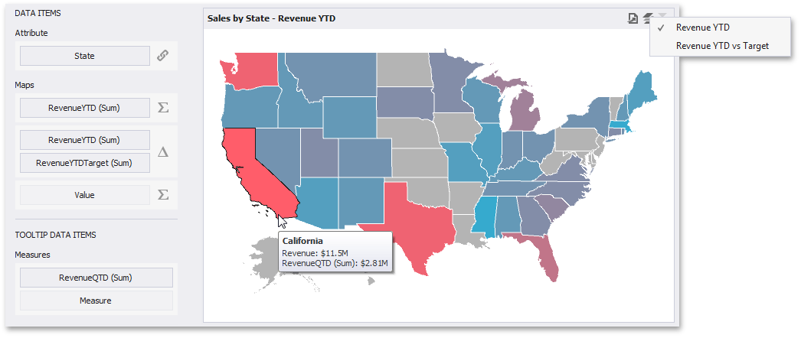
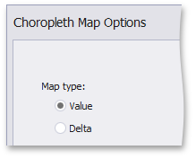

Providing Data
The Dashboard Designer allows you to bind various dashboard items to data in a virtually uniform manner. To learn more, see the Bind Dashboard Items to Data topic.
The only difference is in the data sections that the required dashboard item has. This topic describes how to bind a Choropleth Map dashboard item to data in the Designer.
The image below shows a sample Choropleth Map dashboard item that is bound to data.

To bind the Choropleth Map dashboard item to data, drag and drop a data source field to a placeholder contained in one of the available data sections. The Choropleth Map provides two data item groups for data binding: DATA ITEMS and TOOLTIP DATA ITEMS. Tables below list the available data sections.
DATA ITEMS
Attribute - Allows you to associate map shapes with data source field values.
To associate map shapes with data source field values, drag-and-drop the required dimension to the data item's placeholder and select the required attribute in the Map Attribute Binding dialog. To invoke this dialog, click the Options button (the icon) next to the Attribute placeholder.

Select the required attribute and click OK.
Maps - Contains data items whose values are used to color map shapes. Map shape colors vary based on the map type.
Click the Options button (the
 or
or  icon depending on the map type) next to the Value placeholder and select the required map type in the invoked Choropleth Map Options dialog.
icon depending on the map type) next to the Value placeholder and select the required map type in the invoked Choropleth Map Options dialog.
- If you select Value, the Choropleth map colors map shapes depending on the values provided. To learn more, see Map Coloring.
If you select Delta, the Choropleth map colors map shapes depending on the difference between two values. To learn how to specify delta indication settings, see Delta.
Note
You can fill several data item containers in the Maps section and use the Values drop-down menu to switch between the provided values. To invoke the Values menu, click the
 icon in the dashboard item caption.
icon in the dashboard item caption.
TOOLTIP DATA ITEMS
- Measures - Allows you to add supplementary content to the tooltips. Drag and drop the required measures to provide additional data.